刚刚，位于高新区新川板块的德商御璟天骄取得预售证，推出了仅有的62套高层和140套洋房产品， 当我们仔细审视这个项目时会发现，在高新区，这样的项目已经断档十年以上，这也可能是今年高新区最值得买的项目了。
预售情况
预售楼栋：1-5#、7-9#
套数：202套（洋房140套、高层62套）
户型：高层149㎡ 洋房147-287㎡
预售单价：2.1万元起（精装）
梯户比：2梯2户、1梯2户
交房时间：2020年12月30日
物业费：高层3.6元/平米，洋房4.5元/平米
网上登记时间：2019年5月11日-5月13日
预计摇号时间：5月24日
高新区改善住区，带精装单价2.1万起
德商御璟天骄位于高新区新川板块，整个项目包括有1栋高端公寓、1栋高层和7栋洋房，住宅部分容积率仅为1.6。其中，高层为32层全部为149平米的四房户型，洋房则全部为7层楼，包括257平米和287平米的底跃、167平米的顶跃和147平米的平层户型。
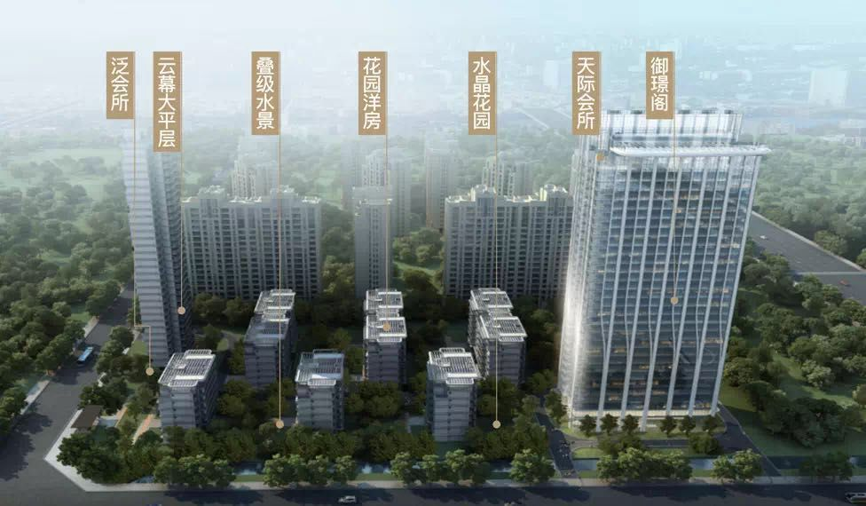
本批次取得预售证的是1-5#、7-9#号楼，包括洋房140套，高层62套。
项目的所有楼栋全部采用南北通透的板式结构，洋房为1梯2户的双开门电梯配置，达到了电梯入户的享受，而高层则采用2梯2户的配置，实现了难得的板式结构。
在洋房户型中，一楼设计为底跃，也就是说负一楼也设计为生活空间，单层楼层面积达到147平米，与此同时，底跃产品带有自家院落和独立的入户，达到了别墅的使用感。
△滑动查看全部户型图
真洋房、纯高端，这样的项目高新区等了十年
回到文初提到的这可能是今年高新区最值得买的项目这一观点，在基本的产品信息上，我们可以看到几个关键词：
1、稀缺真洋房重现高新区
在成都，尤其是在高新区，很难找到7层楼的真洋房产品。事实上，从高新区的发展轨迹可以看到，除了早期的紫荆、神仙树，过渡到金融城、大源，高新区的建筑多以大平层为主，同时，为了实现资源利用的最大化，多数社区会选择别墅和高层的高低配搭配，真正的低密7层楼洋房已经断档十年以上。
△高新区实景图
至今，我们打开链家查看二手房情况时，龙湖铜雀台、华润翡翠城、中海名城等项目的成交单价总是占据区域前列。一方面，这些洋房还原了成都人最热爱的建筑形态和气质，另一方面，低密、南北朝向的板式结构，这样的房子在城市里，往往能够带来最纯粹的居住体验。
从高新区目前的库存来看，后期的供应多以高层为主，即便是存在洋房产品，高度也已经达到了10楼以上，7层楼的真洋房，下一次出现在什么时候，成为未知。
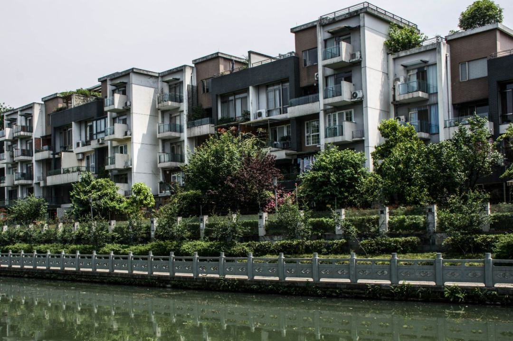
△华润翡翠城
2、难得纯高端补充
整个项目定位于德商的中高端产品，以147平米的起始面积，加上纯板式，电梯入户等优势，足见产品的纯粹性。我们从高新区前期的供应中可以看到，即便是定位于高端的北大资源紫境府也包含部分116平米左右偏首改的户型设置，但御璟天骄这样纯粹的高端产品在高新区并不多见。
另一方面，在产品的具体打造中，也有着诸多可圈可点的地方：
首先，整个项目的外立面全部采用全玻璃幕墙和铝板隔层的设计，这也是从今年初大火的迎晖天玺中沿用，不仅增加了楼盘的品质感，还延续了外立面的使用年限。
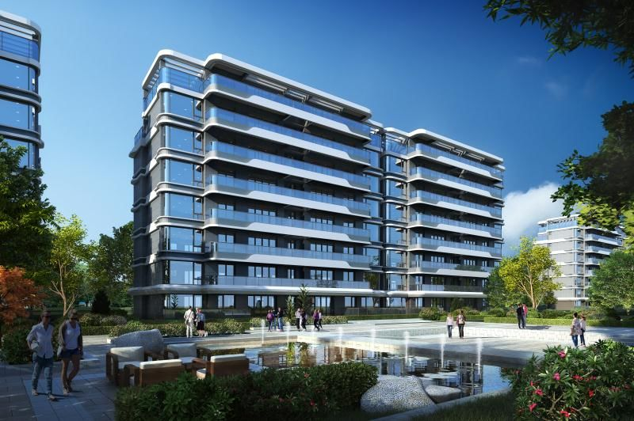
△楼栋效果图
其次，在园林景观规划打造中项目也是煞费苦心。在整个小区中，覆盖了70%的园林，并以7种花期不同的花艺为主题，设计了7座水晶花园，实现了四季不同的景观。这种产品打造的煞费苦心，在现在的市场上十分难得。
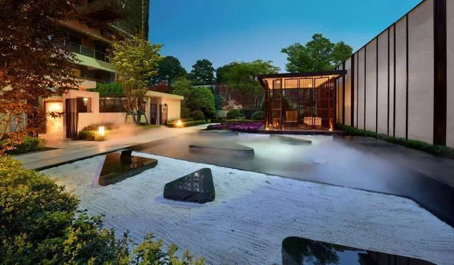
△水晶花园实景图
3、势头正猛的新川板块
这两年，新川板块在高新区风头正盛。毕竟，随着金融城和大源的开发完成，新川板块无论是距离金融城还是软件园都占据了地理上的优势。另一方面，整个板块得益于新川科技园的落地，积聚了丰富的产业基础，同时，这一区域的规划都更加类似于新加坡的城市规划理念，公园、低密、绿地等配置，让新川成为不同于传统高新区的存在。
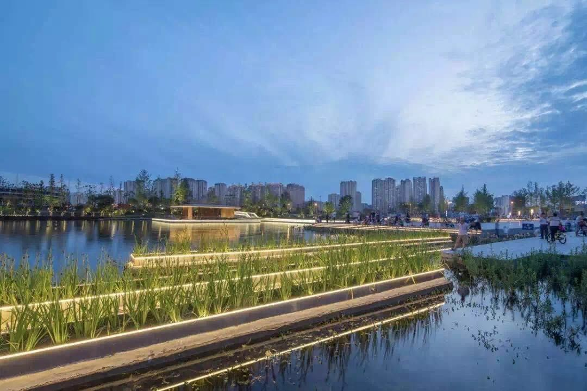
△新川之心公园
经过这些年的积累，可以看到，整个区域的各项配套正在日渐丰沛：新川之心公园已经投入使用，围绕着这座公园绿肺，区域内的价值正日益凸显——整个区域内除德商外，还有融创、北大资源、金隅等一众品牌开发商，该区域的楼面地价也保持了高新区的地价记录。
与此同时，这一区域内的生活配套也十分丰富，包括有主要交通干道红星路南延线，以及地铁1号线和6号线的地铁线路，而在项目门口，就是即将开通的BRT线路；教育资源除了行知小学、新华小学外，新川板块还规划有22所学校配置，高新区著名的金苹果锦城一中也在项目附近；目前区域内的商业主要以荷兰水街、以及已经开业的蓝润SIC。
在基础配套外，德商还带来了整个区域内首个全玻璃天际会所，位于商业的顶楼，为业主和会员提供会所服务，这也是在物业之外的第二重服务配置。
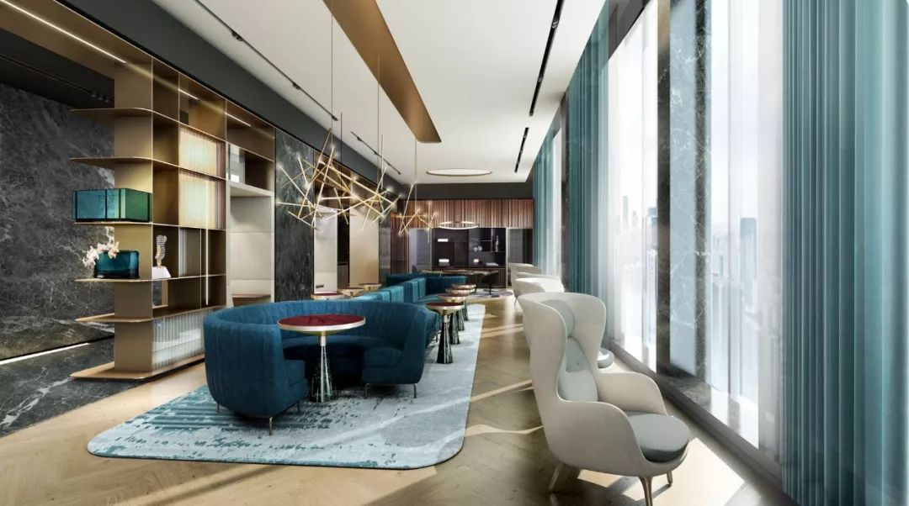
△御璟天骄会所
发哥点评
从拿地之初，德商地块就受到关注，加上后期新川板块的多块价格不菲的地块拍出，这一项目也就更加值得期待。许多业内人士看过项目之后都对德商大加赞赏，这种赞赏不单单是来自于一个项目，而是自去年一路走红的迎晖天玺之后，德商在高端产品的打造上面也愈发顺手，御璟天骄的呈现，包括俱乐部这一配置，都还原了迎晖天玺的高端理念。
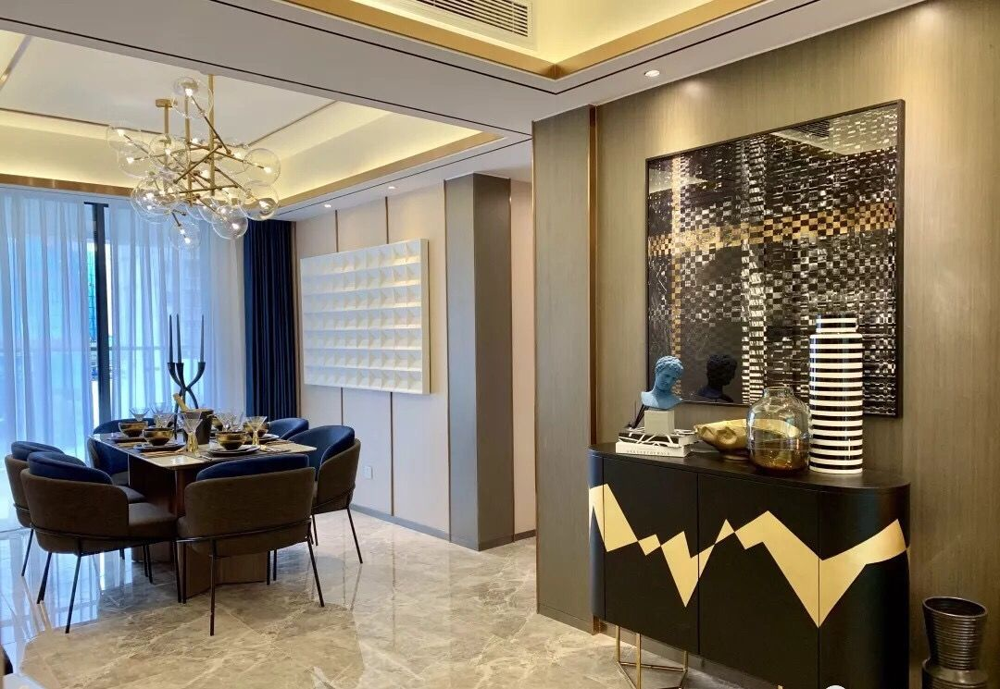
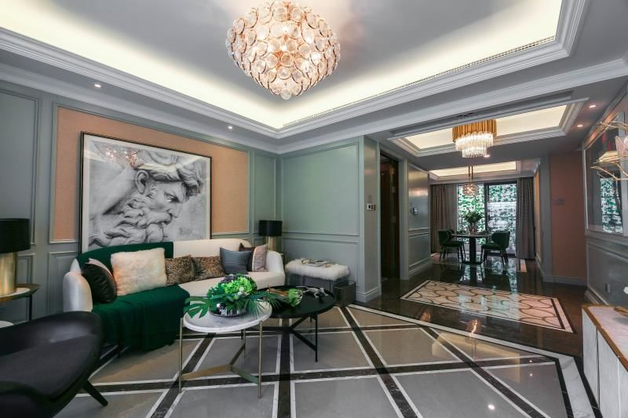
△实体样板间
另一方面，从高新区去年以来改善和高端市场的表现来看，无论是招商大魔方、文儒德还是今年开盘的大源别墅北辰香麓，高新区对这样的产品需求十分旺盛，而这样纯粹的产品恰好也是市场十分稀缺的，御璟天骄的入市也将大大解渴这一部分的市场需求。与此同时，从产品的稀缺性来看，未来这样的产品会更加珍贵。
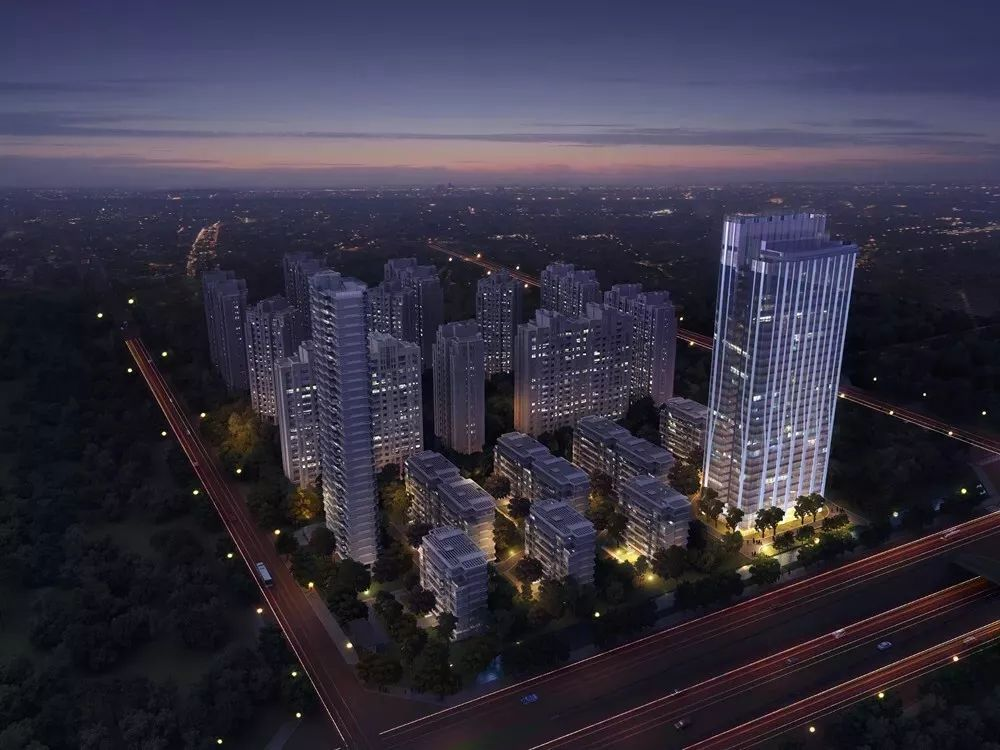
△德商御璟天骄意境图
当然，从带精装单价2.1万元/平米的价格来看，产品的总价达到三百万，这对于刚需和首改家庭来说，门槛较高。不过，对于高新区的改善家庭而言，这样纯粹的低密洋房产品，居住舒适度远胜于现在市面上90%的项目。而在错过上个十年之后，这或许是你近十年来最后的机会。
德商御璟天骄现已取证
咨询电话：8533 5888
广告
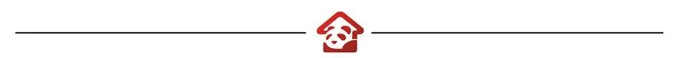
主编：余鸽
责编：骆燏
图片来源：成都商报资料库/视觉中国/IC photo
商务合作：028-86611300
申请加入购房微信群：文末扫码
原创文章由成都商报房产部采写，如需转载，请后台联系授权，若擅自转载，一诉到底。
-近期热点新闻-
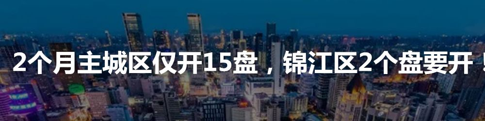